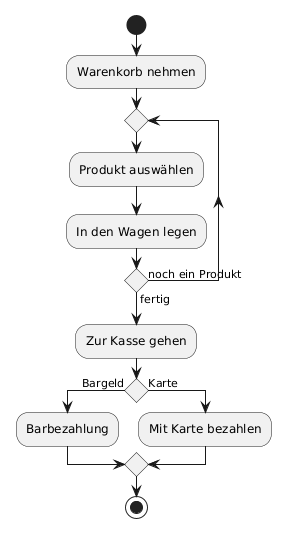
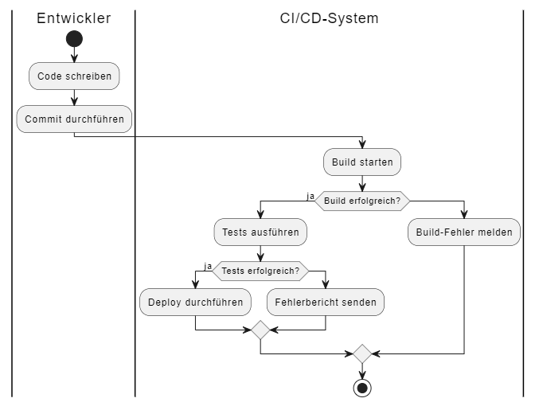
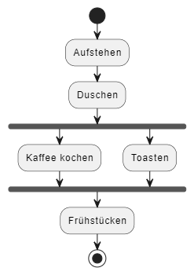

Definition
Ein Aktivitätsdiagramm visualisiert den Ablauf von Arbeits- oder Prozessschritten in einem System. Es zeigt Aktionen, Entscheidungen und Parallelitäten.
Zweck & Verwendung
- Prozessmodellierung: Beschreibung von Workflows (z. B. Bestell- oder Freigabeprozesse)
- Analyse: Erkennen von Engpässen und Optimierungspotenzial
- Dokumentation: Klare Darstellung von Abläufen für Entwickler und Business
Praxisrelevanz
- Schnelle Identifikation von Prozessschritten
- Verbesserte Kommunikation zwischen Fachbereich und IT
- Grundlage für Automatisierung und Testskripte
Grundelemente
- Startknoten: Schwarzer Kreis
- Aktivität: Abgerundetes Rechteck mit Bezeichnung
- Entscheidung: Raute mit Bedingungen („[Bedingung]“)
- Zusammenführung: Raute ohne Bedingung
- Endknoten: Umrahmter schwarzer Kreis
- Kontrollfluss: Pfeile zwischen Knoten

Unterschiedliche Elemente zum Flowchart
- Partitionen: Schwimmbahnen (wer in einem Prozess welche Aufgaben übernimmt)

- Parallelität: Balken („Fork“/„Join“)

OOP-Bezug
Aktivitätsdiagramme ergänzen Klassendiagramme, indem sie Objektverhalten und Methodenabläufe sichtbar machen.